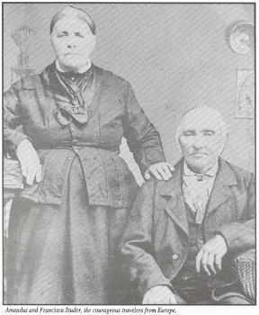
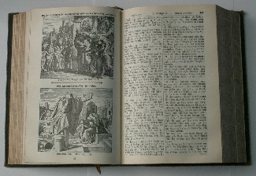
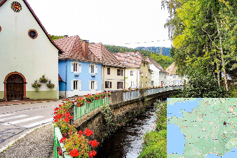

The Discovery That I'm French!
With a last name of Studer, and having grown up in a household where my
parents regularly spoke German, it would be reasonable to think that your
family heritage is clearly German. And that is what my aunts and uncles believed,
until one of my uncles, Richard Studer, decided to discover the true roots of our family.
A family bible, that had been passed down through many generations, was in the
possession of my uncle, Lawrence Studer. This bible had been given to one
Amandus Studer by his mother as he was preparing to leave Europe for the ‘New World’
of North America in 1847. The bible, with numerous handwritten notes in German, had served for
many years as a symbolic representation of the family history, and had never been
seriously analyzed to better understand our family’s heritage. The picture to the right
is Amandus Studer and his wife Francisca in the later years of their life.


The Family Bible
The Search Begins
My uncle Richard decided that this bible would provide him with a great starting
point to begin his journey in establishing the family tree. Richard began a deep
dive into the family bible and discovered a short translation of one of the
handwritten notes in German.
In it, it said that the bible was the property of
one Amandus Studer of the village of ‘Overbush’ located in Eastern France.
Extremely excited by this discovery, Richard believed it would be a simple task
to look up the name of this village in France and continue his search for the families’ roots.
Not So Fast!
He could find no such village named ‘Overbush’ in France.
Undaunted, he decided to find someone who could take another look at the
handwritten notes in German and see if the translation was correct.
He found a gentleman who was fluent in German, and after a retranslation of the text,
discovered that the name of the village was actually Oberbrook, located in
the Alsace region of France.

Oberbruck
Alsace
The discovery that Amandus Studer had received this bible from his mother
in Oberbrook, France set off a series of trips to the region by my uncle, as
well as other members of the family.
All in search of a deeper understanding of our history. The net result of
this research, based on many trips to the region, was the revelation that the
Studer name first appeared in in the area around Oberbrook in 1591!
From Alsace to Canada
The uncle of Amandus Studer’s wife Francisca had emigrated to St. Agatha,
Canada a number of years before. Amandus and his wife Francisca made the decision
to go to Canada sometime in 1847 in search of a better life.
They arrived in St. Agatha, Ontario, Canada, which is 40 miles west of Toronto,
soon after crossing the Atlantic. At that time, St. Agatha was a small colony of
German speaking peoples, many of whom had emigrated there from Alsace. Amandus was
a cobbler, as was his father, and his grandfather. While in St. Agatha he and his
wife raised a large family of 10 children, 7 boys and 3 girls.
Finally in Minnesota
Around 1869, Amandus moved his family from St. Agatha to a small farming
community in Lena, Illinois, which is located in the northwest corner of Illinois.
There, they made a change in their lifestyle and began farming.
After 5 years of farming in Lena, the Studers moved, once again to Iowa and
resumed farming.
It is from there that the some of the married children of Amandus
moved to northern Minnesota in search of a better life. There, in the area of St. Cloud
Minnesota where my father Robert was born. And the rest is history. Or should I say, "French History"